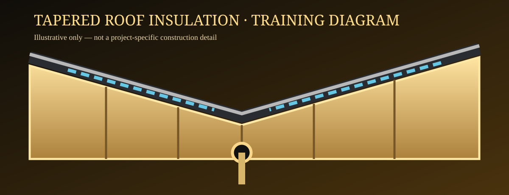

01 · Survey & levels
Survey, levels and drainage
Learn to identify existing roof levels, high and low points, outlets, thresholds and structural constraints before a tapered scheme is specified.
Script prepared · Video pendingFollow five visual learning stages, from roof survey to final inspection. Interactive diagrams are available; narrated filmed lessons are not yet published.
Five structured video lessons covering roof surveys, board layouts, installation planning, drainage and quality control. The scripts are ready; narrated footage and rendered video lessons are in production.
Explore survey, layout, board sequencing, drainage and inspection through original step-by-step animated diagrams and knowledge checks.
Start animated lessonsLearn to identify existing roof levels, high and low points, outlets, thresholds and structural constraints before a tapered scheme is specified.
Script prepared · Video pendingFollow the manufacturer-approved board codes, thickness changes, orientation arrows, ridges and valleys. Understand the consequences of reversing a board.
Script prepared · Video pendingExplore dry-checking the board schedule, preparing the specified VCL and using approved fixing systems with suitable weather protection.
Script prepared · Video pendingExamine transitions, reverse falls, local ponding risks, outlet interfaces and how approved details should be checked.
Script prepared · Video pendingUnderstand inspection records, photographic evidence, board and fixing checks, deviations and final waterproofing interfaces.
Script prepared · Video pendingTry the animated roof build-up, tapered insulation diagram, fall calculations and knowledge assessment while the videos are being produced.
Open interactive lesson
Work through survey, board schedule, installation planning, drainage and inspection. The interactive animations are available now; recorded narrated videos remain in production.
Study roof levels, board codes, dry set-out, drainage interfaces and inspection checkpoints.
Animated scenes are labelled as illustrations and are not evidence of a completed installation.